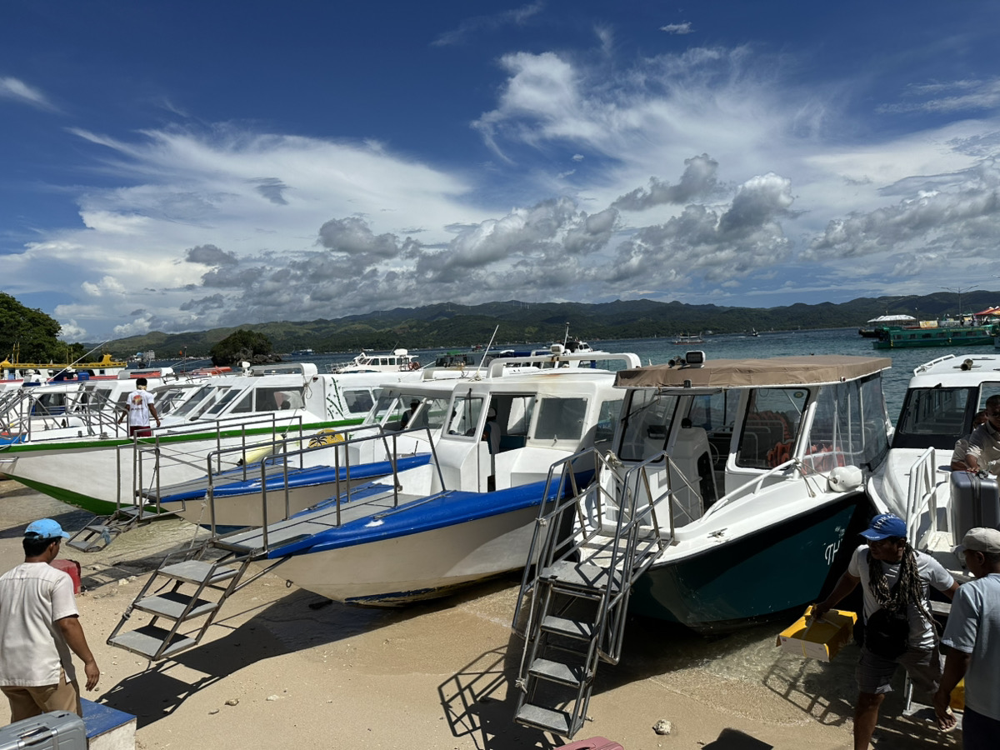
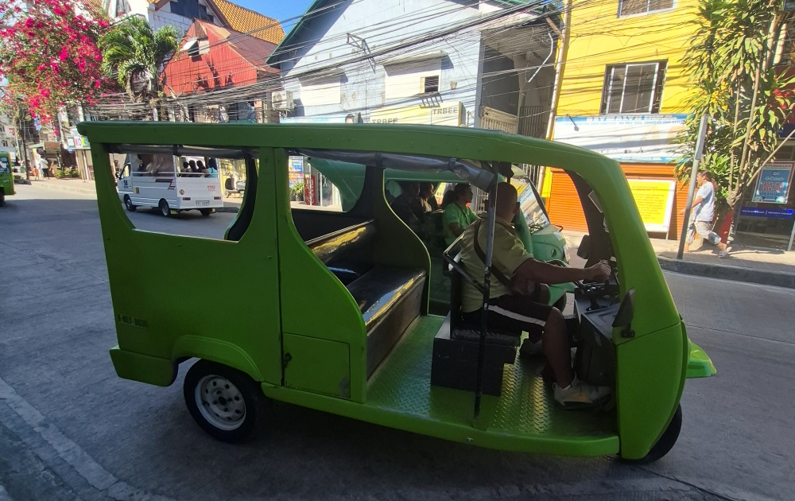
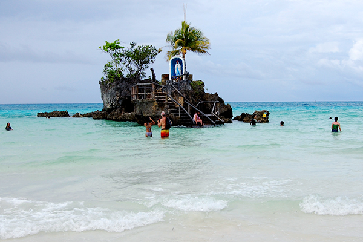
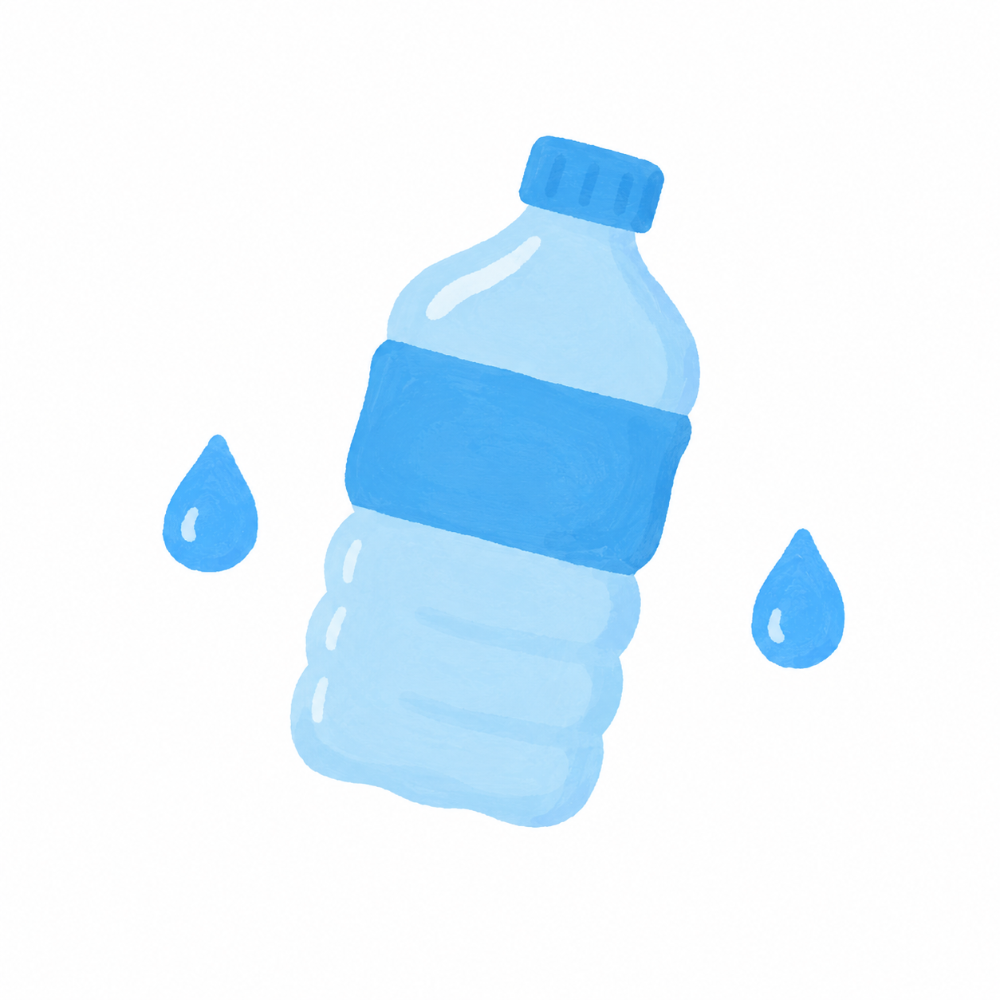
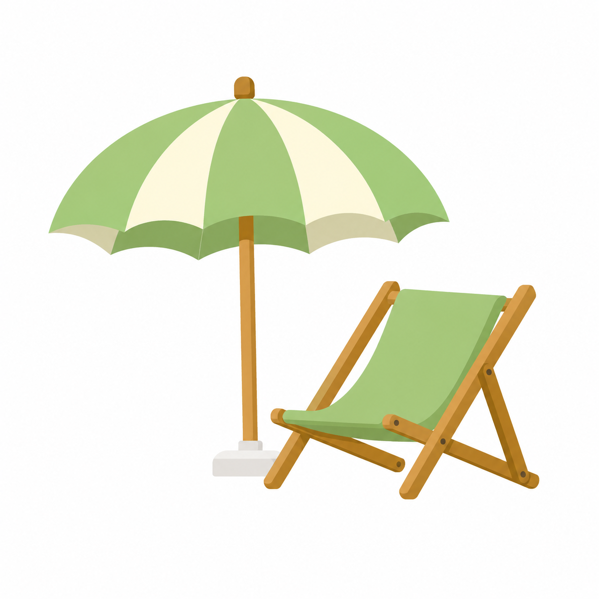
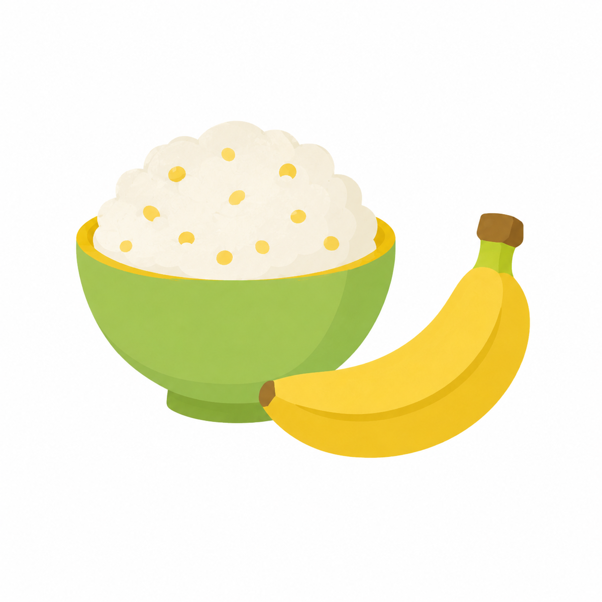

フィリピンにある小さな島。白い砂浜と青い海で有名な、とびきりきれいなリゾートです。
さらさらの白い砂。裸足で歩くと気持ちいい
オレンジから紫に変わる空の色
Jollibee・McDonald's・7-Eleven も現地に
ボラカイ島、地図で見るとどのくらいの大きさかな？
飛行機、港、船、e-trike。島に着くまでにも、いくつかの「はじめて」に出会えます。
日本を出発したら、飛行機でフィリピンへ。空の上から見える景色も楽しみのひとつです。
空からどんな景色が見えるかな？

カティクラン空港に着いたら、港へ向かいます。港には、島へ向かう船がいくつも並んでいます。
港にはどんな船があるかな？
バンカーボートという細長い船で、約15分。海の上を渡りながら、ボラカイ島が少しずつ近づいてきます。
船から何が見えるかな？

島の中は e-trike という電動の3輪車で移動します。後ろの席に乗り込んで出発です。
e-trikeってどんな音がしそう？
海や空をうごく乗りものを見てみよう。形・音・乗り心地、どれが一番気になる？
飛行機・船・e-trike、どれが一番楽しみ？
白い砂と青い海を、親子でのぞいてみよう。はだしで歩いたらどんな感じかな？

白い砂、はだしで歩いてみたい？
海の中、どこまで見えるかな？
砂浜や波打ちぎわには、小さな生き物が隠れているかもしれません。見つけられたらラッキー。
カニとヤドカリ、どっちを見つけたい？
見つけても、さわらずにそっと見てみよう。写真に残すだけでも、旅の発見になります。
晴れた夕方には、空がオレンジやピンクに染まります。夜の海は昼とは全然違います。
夕日は何色に見えるかな？
夜の海は、どんな音がするかな？
D'Mallやお店で、日本と違うものを見つけよう。看板、色、音、おみやげも旅の発見です。
日本と違うものを3つ見つけられるかな？
島の学校をのぞいてみる
ボラカイ島には、いろいろな国につながる子どもたちが通う学校もあります。日程が合えば、学校を見たり、少し体験できることもあります。
日本の学校と、どこがちがうかな？
学校側の受け入れ状況により、ご案内できない場合があります。
ボラカイには、あまくておいしいフルーツや、子どもも食べやすいごはんがあります。無理に挑戦しなくても大丈夫。食べられそうなものを探してみよう。

南国の甘いフルーツ
チキンやポテトがある人気のお店
飲みものやお菓子を探せる場所
暑い日に飲みたくなる冷たい飲みもの
フィリピンのかき氷デザート
パン・卵・フルーツなどを見つけよう
マンゴーシェイク、飲んでみたい？
ジョリビーとマック、どっちが気になる？
暑い・つかれた・おなかがすいた時は？

水をのもう
こまめに水をのんで、からだをまもろう。

すずしい場所で休もう
日かげやクーラーのある場所で、ひと休みしよう。

食べやすいものをえらぼう
すきなもの、たべやすいものからでだいじょうぶ。
外に出るだけが旅ではありません。ホテルで休む時間も、旅の大事な一部です。
ホテルでのんびりするなら、何があるとうれしい？
同行する大人が確認しておきたい情報はこちら